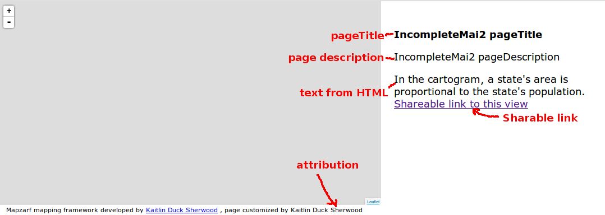
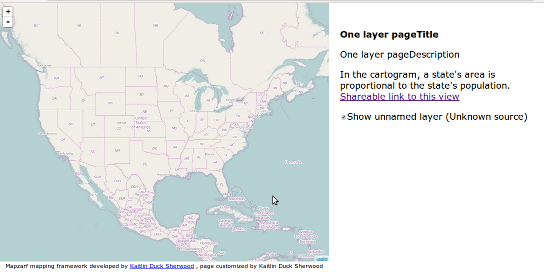
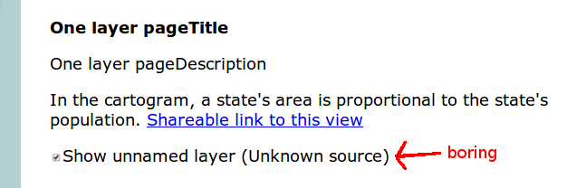
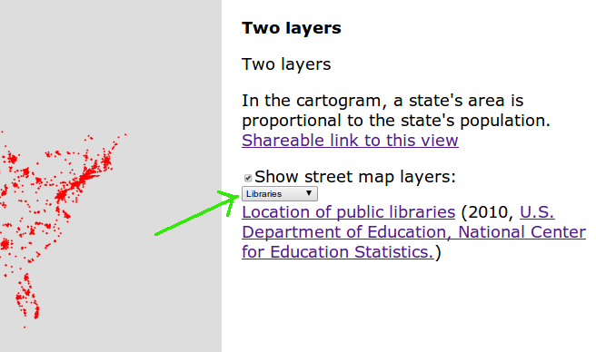
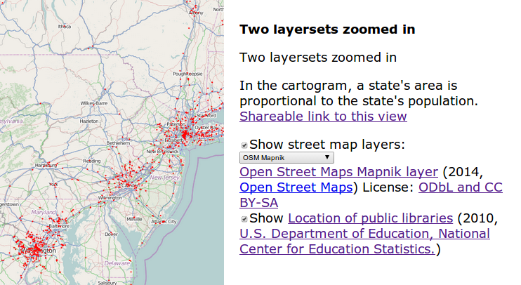

Mapzarf builds a tile-based map application from a data file. Here is a screenshot of an example:
(Click on the image to go to the web page of the example.) In the image, you can see that there's a map, some city names, a marker with a popup, some text, some dropdowns, and some checkboxes. Almost all of that is specified in a JSON file called the Map Application Info or MAI file. If you clicked on the image, you'll see that the app can grab information from the query string for how to initialize the map so that User1 can show User2 what he or she was looking at. Mapzarf handles interpreting the data file and making it all happen.
You need three things: a .html file, a .css file, and a .json file.
The only thing you should need to change in the HTML and CSS file is the location of the Leaflet .js file, and the location of the mapzarf code (e.g. mapzarfAll.js or mapzarfAllCompressed.js or the individual files). Change the HTML which looks like this:
<!-- FIXME TODO NOTE Set this to the locations of your Leaflet
and mapzarf CSS files! NOTE TOTO FIXME -->
<link rel="stylesheet" href="/thirdparty/leaflet/Leaflet-0.6.4/leaflet.css">
<link rel="stylesheet" href="/mapzarf/mapzarfDemo.css">
Wellllllllllll, you probably also want to remove the text about cartograms in
the HTML file. Almost nobody even knows what a cartogram is and even
fewer people care. (Why is it there? Because I care, and to date I'm
the only person using Mapzarf.) (So why am I documenting it? Because
there is zero chance anyone else will ever use mapzarf if I don't document it.)
The MAI file is JSON, and as such, it is really stupid-easy to make a mistake in the syntax. I strongly suggest that you become good friends with a JSON validator; a JSON validator will make your life hugely better. JSONLint and JSON Formatter are both great tools.
While most MAI files will have more fields, the smallest MAI file has four fields:
Here is an example of a minimum MAI file. (It also happens to be the MAI file used for the test named testIncompleteMai2.)
{
"pageTitle":"TestIncompleteMai2 pageTitle",
"pageDescription":"IncompleteMai2 pageDescription",
"attribution":"Kaitlin Duck Sherwood",
"layersets":[
]
}
It makes an application which looks like this (pretty boring):
{ "pageTitle":"One layer pageTitle",
"pageDescription":"One layer pageDescription",
"attribution":"Kaitlin Duck Sherwood",
"layersets":[ {
"shortName" : "arbitrary",
"displayName" : "street map",
"layers":[ {
"shortName" : "mapnik",
"tileEngine" : "bare",
"tileEngineVersion" : 1.0,
"url" : "http://a.tile.openstreetmap.org/%7Bz%7D/%7Bx%7D/%7By%7D.png"
} ] } ] }
The page now looks like this:
The first thing you probably notice in the MAI is the layerset stuff. We'll come back to that. Focus for the moment on the layers stuff.
There are several different types of layer which you can specify, but the "bare" one shown above is probably what you will be using most. It has four required fields:

NOTE: From here on, I'm only going show pieces of screenshots. The whole screenshot takes up a lot of room and most of it isn't very interesting.
To be a good online citizen, you really should provide better information about the map tiles which you use, especially if someone else provides the tiles. Not only is it polite, but it will keep noobs from asking you questions that really should go to the tile provider. In the layer spec, there are lots of things you can describe:
{
"shortName" : "mapnik",
"tileEngine" : "bare",
"tileEngineVersion" : 2,
"shortDescription" : "OSM Mapnik",
"description" : "Open Street Maps Mapnik layer",
"sourceUrl" : "http://wiki.openstreetmap.org/wiki/Tile_servers",
"url" : "http://a.tile.openstreetmap.org/%7Bz%7D/%7Bx%7D/%7By%7D.png",
"provider" : "Open Street Maps",
"providerUrl" : "http://openstreetmap.org",
"license" : "ODbL and CC BY-SA",
"licenseUrl" : "http://www.openstreetmap.org/copyright",
"year" : 2014
}
Gives:
{
"shortName" : "libraries",
"tileEngine" : "bare",
"tileEngineVersion" : 2,
"shortDescription" : "Libraries",
"url" : "http://localhost/maps/mapeteria2/dots.php?x=%7Bx%7D&y=%7By%7D&zoom=%7Bz%7D&points=dotAttributes&name=library&year=2010&colour=ff0000&size=1&jid=0"
}
That will give you a page which has a drop-down menu letting you select
which layer to look at; here the libraries layer is selected.
"layersets":[
{
"shortName":"maps",
"displayName":"street map",
"layers":[ {
"shortName":"mapnik",
"tileEngine":"bare",
"tileEngineVersion":1.0,
"url":"http://a.tile.openstreetmap.org/%7Bz%7D/%7Bx%7D/%7By%7D.png"
}, {
"shortName" : "mapquest",
"tileEngine" : "bare",
"tileEngineVersion" : 2,
"url" : "http://otile1.mqcdn.com/tiles/1.0.0/osm/%7Bz%7D/%7Bx%7D/%7By%7D.png"
} ] }, {
"shortName":"dots",
"displayName":"street map",
"layers":[ {
"shortName":"libraries",
"tileEngine":"bare",
"tileEngineVersion":1.0,
"url":"http://localhost/maps/mapeteria2/dots.php?x=%7Bx%7D&y=%7By%7D&zoom=%7Bz%7D&points=dotAttributes&name=libraryt&year=2010&colour=ff0000&size=1&jid=0"
} ] } ] }
Each layerset has three required fields (and no optional fields):
{
"pageTitle":"Two layersets zoomed in",
"pageDescription":"Two layersets zoomed in",
"attribution":"Kaitlin Duck Sherwood",
"startingCenterLat" : 40.0,
"startingCenterLng" : -79.0,
"startingCenterZoom" : 7,
"layersets":[ <as above> ]
}
gives a page where a piece of the page looks like this:
You can also set the minZoom and maxZoom, which prevent the user from zooming in/out past those limits. However, that's hard to show with a still photo.